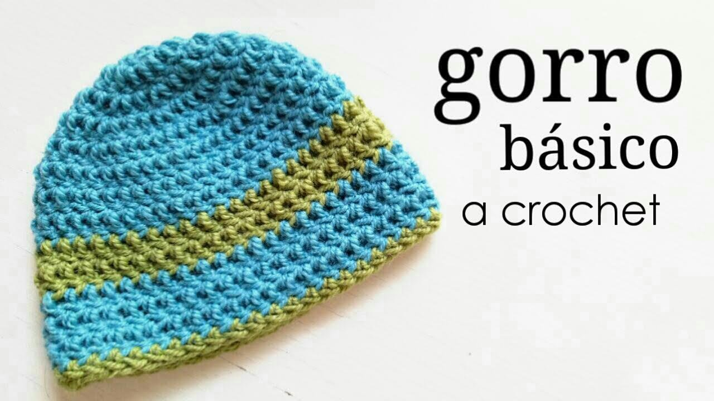
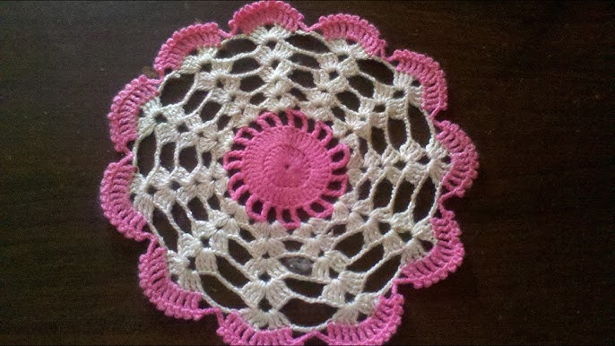

Galería de Tejidos
Hermosa bufanda tejida a crochet paso a paso

Gorro de lana tejido a mano, ideal para quienes recién comienzan en el crochet.

Tapetes coloridos tejidos a crochet, un diseño sencillo para empezar.
Videos Tutoriales para Principiantes
Tutorial para tejer una bufanda básica para principiantes.
Cómo tejer un gorro paso a paso desde cero.
Diseños simples de Tapetes para principiantes.
Guía de puntos basicos para Principiantes